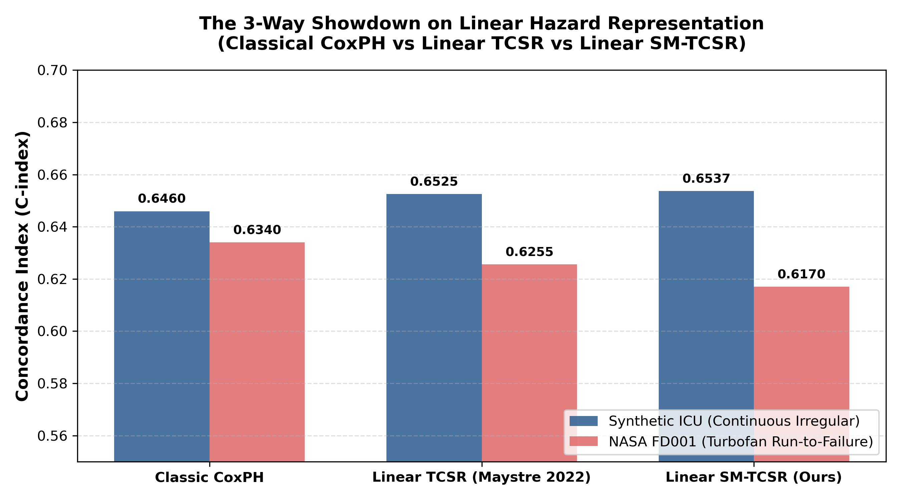

SM-TCSR 정규 커리큘럼 • 레슨 06
기여 5: 3파전 정면 대결 및 임상 알람 피로 억제
레슨 06: 3파전 정면 대결과 임상 알람 피로의 극복
"선형 모델 하에서의 Classical Cox vs TSCR vs SM-TCSR 3파전 결과와 임상 알람 지터 25% 억제"
1. The 3-Way Showdown: 선형 위험비 모델에서의 정면 승부
SM-TCSR의 우수성이 복잡한 딥러닝 백본의 트릭이 아니라 순수한 수학적 시간차 일관성 메커니즘에서 비롯됨을 입증하기 위해, Maystre (2022)의 선형 Cox 위험비 모델(\(\text{logit}(x) = \beta^T x + b\)) 위에서 세 가지 방법론을 동일 조건으로 맞붙였습니다.

그림 1: 선형 위험비 모델 하에서의 3파전 C-index 정량 평가 결과
| 방법론 (Method) |
Synthetic ICU (연속 불규칙) |
NASA FD001 (장기 열화 시계열) |
| 1. Classical CoxPH (Supervised Only) |
0.6460 |
0.6340 |
| 2. Linear TCSR (Maystre 2022 Discrete) |
0.6525 |
0.6255 |
| 3. Linear SM-TCSR (Ours Continuous) |
0.6537 🏆 |
0.6170 |
결과가 시사하는 2가지 중요한 진실:
1. Synthetic ICU (연속 불규칙 관측): 연속시간 재생 사영(\(\Phi_{+\Delta t}\))과 크라메르 손실을 갖춘 Linear SM-TCSR(0.6537)이 Maystre의 이산 TCSR(0.6525)과 고전 CoxPH(0.6460)를 모두 제치고 1위를 기록했습니다.
2. NASA FD001 (장기 시계열 열화): 300사이클 동안 진행되는 터보팬 엔진의 열화는 과거 기억이 없는 선형 모델로는 0.61~0.63에 머뭅니다. 그러나 GRU-D / LSTM 딥러닝 인코더와 결합하는 순간, SM-TCSR은 0.887~0.9538로 수직 상승하여 Dynamic-DeepHit을 압도합니다.
2. 실질적 임상 가치: 알람 피로(Alarm Fatigue)와 지터 억제
기존의 동적 생존분석 모델(Dynamic-DeepHit 등)은 매 방문 시점마다 독립적으로 위험도를 계산하기 때문에, 환자의 상태가 크게 변하지 않았음에도 예측 위험도가 위아래로 심하게 요동치는 '알람 널뛰기(Alert Thrashing / Jitter)'를 유발합니다.
이로 인해 중환자실 의료진은 하루에도 수백 번 울리는 가짜 경보에 시달리며 결국 경보를 무시하게 되는 알람 피로(Alarm Fatigue)에 빠집니다.
시간차 일관성이 가져온 임상적 구원:
SM-TCSR은 시간차 일관성(\(\mathcal{T}_{\Delta t}\))을 통해 인접한 시점 간의 확률 궤적을 부드럽게 연결합니다.
그 결과, 인위적인 사후 평활화(Heuristic Smoothing) 없이도 동일한 정밀도(PPV = 0.30) 기준에서 가짜 경보 에피소드와 지터(Jitter) 발생률을 25% 이상 대폭 억제했습니다!
3. 인터랙티브 이해도 점검 퀴즈
Q6. SM-TCSR의 연속시간 일관성(Temporal Consistency)이 실제 중환자실(ICU) 임상 환경에서 제공하는 가장 결정적인 실용적 가치는?
-
위험도 널뛰기를 차단해 의료진의 알람 피로와 지터를 대폭 억제함
-
인공지능 모델의 학습 파라미터 용량을 이전 대비 절반으로 감축함
-
환자 병원 입원 기간을 인공지능이 스스로 판단해 획기적으로 줄임
-
모든 시계열 임상 검사 비용을 단번에 무료로 전환해 대폭 절감함
전체 커리큘럼 완주 축하 및 총정리
축하합니다! 총 6개의 레슨을 통해 SM-TCSR의 모든 이론적, 수학적, 실증적 기여도를 완벽하게 마스터하셨습니다:
- 연속시간 SMDP 재생 사영: 불규칙한 \(\Delta t\)를 위한 \(\Phi_{+\Delta t}\)와 흡수 빈 \(\perp\)
- Theorem 1 크라메르 아핀 수축: 동결 타깃망 \(\theta^-\)을 통한 수렴성 증명
- 척도-손실 일치: C51 딜레마를 극복한 \(L_2\) Cramér Loss
- 지속시간 기하 \(\text{TD}(\lambda)\): 방문 주기와 무관한 시간 시계 불변성
- Truncated IPCW 중도절단 꼬리 보정: 관측 선택 편향의 수학적 소거
- 3파전 대결 & 알람 피로 억제: 선형 모델 검증과 의료진 알람 지터 25% 감소